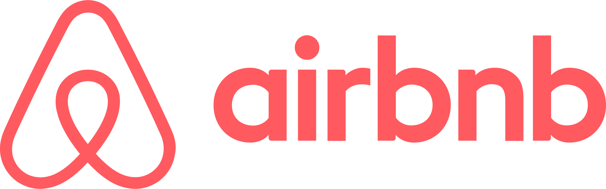

Mensajería comprometida
Slack stá diseñado para el trabajo. Es la aplicación que te permite contactar con tu equipo rápidamente sin importar dónde estés.
Más información sobre las funciones de Slack →

Reúne a tu equipo
Los canales son el corazón de Slack. Son espacios organizados para todo el mundo que contienen todo lo necesario para trabajar.
Más información sobre los canales →

Selecciona cómo quieres trabajar
Puedes chatear, enviar clips de audios y vídeo o unirte a una junta para discutir asuntos en directo.
Obtén más información acerca de la comunicación flexible →